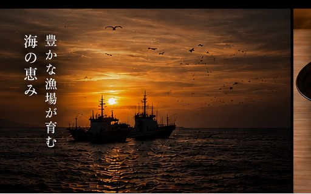
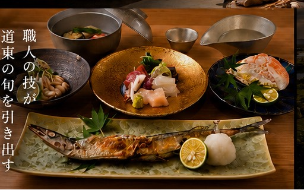
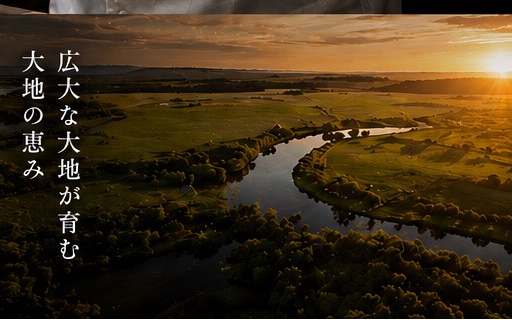
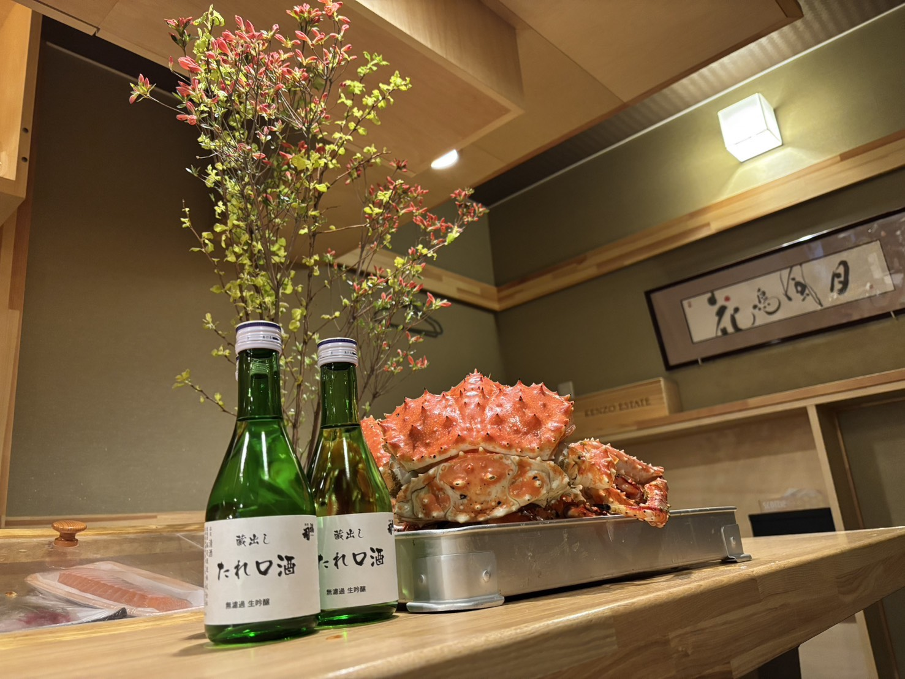
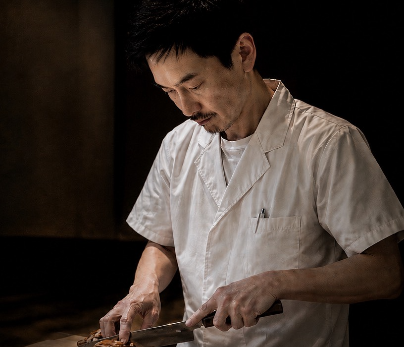

01 — SEA
海の恵み
釧路港
朝に揚がる毛蟹、雲丹、時鮭、たらば。
潮の流れが豊かな漁場を育む、太平洋の幸を朝引きでお届け。
- 毛蟹
- 雲丹
- 時鮭
- 秋刀魚

釧路という街は、海と湿原と大地が織りなす、稀有な恵みの交差点。
朝の漁港で揚がったばかりの魚、霧の湿原で育つ山菜、
広大な台地が育てる肉と乳。そのすべてが、半径百キロのうちに揃う。
私たちはその恵みを、足し算ではなく引き算で味わっていただきたい。
余白を残し、香りを残し、季節を残す。それが、和食 直の流儀です。

朝に揚がる毛蟹、雲丹、時鮭、たらば。
潮の流れが豊かな漁場を育む、太平洋の幸を朝引きでお届け。

霧の湿原に芽吹く山菜、阿寒の茸、湧水で締めた山葵。
大地の呼吸を、職人の包丁が引き出します。

放牧の和牛、滋味深い鴨、絞りたての乳。
広大な大地が時間をかけて育てた、力強い味わい。
その日の最良の食材を見極め、八〜十二品で構成する一夜限りのお品書き。
季節と仕入れにより内容は日々変わります。
※ サービス料 別途10%。アレルギー・苦手食材は事前にお知らせください。
VIEW RESERVATION →

一皿ごとに、釧路の景色が浮かんでくる。
これは料理ではなく、土地そのものをいただく時間でした。
The omakase was a quiet conversation between season and craft.
Every dish whispered of Eastern Hokkaido.
記念日に伺いました。
扉を抜けた瞬間から、静謐な時間が始まる。忘れられない夜になりました。
大切な時間を、最高の一皿とともに。
皆様のお越しを心よりお待ちしております。